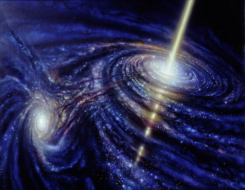
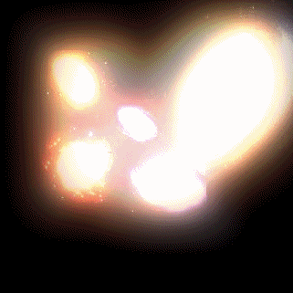
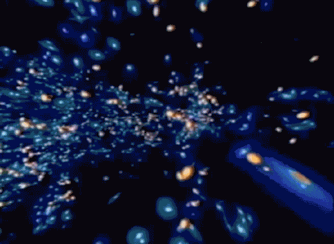

Expansiunea Universului

Conform parerilor lui Stephen Hawking, universul a avut o evolutie foarte regulata, în conformitate cu anumite legi. Astazi, oamenii de stiinta descriu universul în termenii a doua teorii partiale fundamentare – teoria generala a relativitatii si mecanica cuantica. Universul este spatiu-timp si este în expansiune continua.
Aceasta se demonstreaza plecând de la teoria relativitatii generale, prin care se explica un fenomen curios : spectrele galaxiilor îndepartate prezinta un decalaj spre rosu, fenomen ce se produce atunci când sursa emitatoare este în miscare în raport cu observatorul. Savantul Hubble a descoperit ca aproape toate galaxiile se departeaza de noi, ca marimea deplasarii nu este întâmplatoare ci este proportionala cu distanta de la noi la galaxie si ca, deci, cu alte cuvinte, cu cât galaxia este mai departata, cu atât mai repede se departeaza de noi. Deci universul se extinde, distantele dintre diferitele galaxii crescând continuu. „Ceea ce stim este ca universul se extinde cu 5 pâna la 10 procente la fiecare miliard de ani. Unele observatii recente indica faptul ca rata expansiunii universului nu scade, ci creste. Este foarte straniu, pentru ca efectul materiei în spatiu, fie ca are densitate mica, fie ca are densitate mare, poate doar sa încetineasca expansiunea. La urma urmei, gravitatia este atractiva. O expansiune cosmica accelerata este ceva în genul suflului unei explozii care sporeste în loc sa se disipeze dupa explozie. Ce forta ar putea fi responsabila pentru a împinge tot mai rapid cosmosul catre expansiune? Nimeni nu este înca sigur. Comportarea universului în epoca târzie: universul va continua sa se extinda cu o rata mereu crescatoare. (Stephen Hawking – din cartea „O mai scurta istorie a timpului” aparuta în 2007). Cauza expansiunii accelerate pare sa fie din nou manifestarea caracterului repulsiv al gravitatiei; s-ar repeta astfel împrejurarea similara din trecutul universului când acesta a trecut printr-o perioada de dilatare gigantica. Forta care a determinat comportarea „inflationara” a universului ar fi fost gravitatia care, în acele conditii, s-a manifestat repulsiv, creând o asa zisa „presiune negativa”. Fara expansiunea universului nu s-ar fi putut forma nici o legatura stabila, nici un sistem, nici o organizare a materiei / substantei / energiei (atomi, molecule, celule, stele, planete, galaxii).